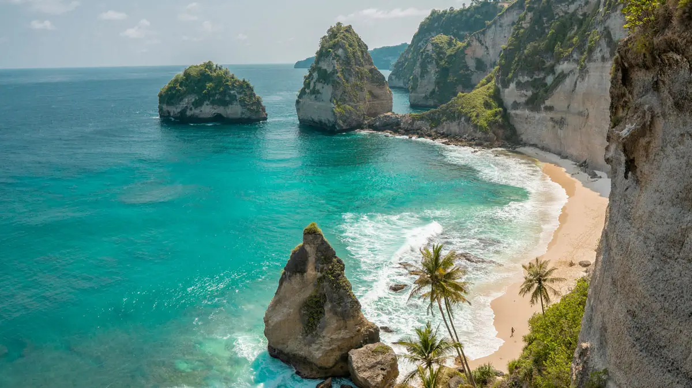
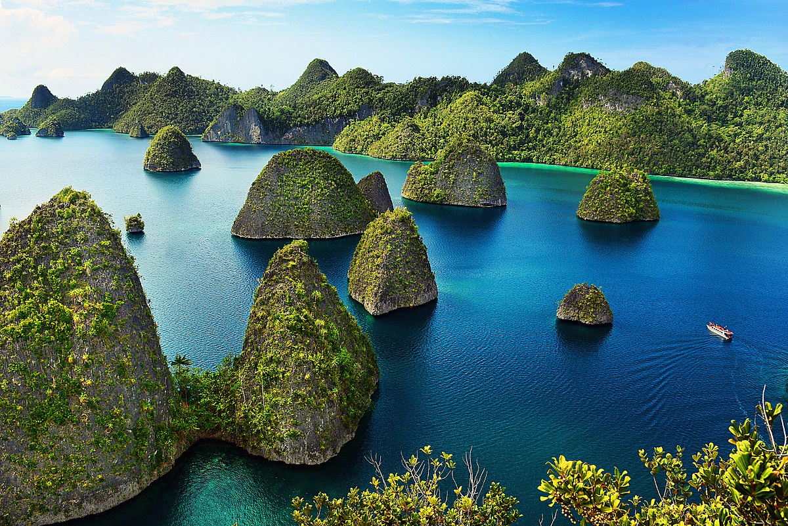

Destinasi Unggulan

Pantai Bali
Surga wisata tropis dengan pasir putih dan sunset indah.

Candi Borobudur
Situs warisan dunia yang penuh sejarah dan spiritualitas.

Raja Ampat
Surga tersembunyi dengan keanekaragaman hayati laut yang luar biasa.